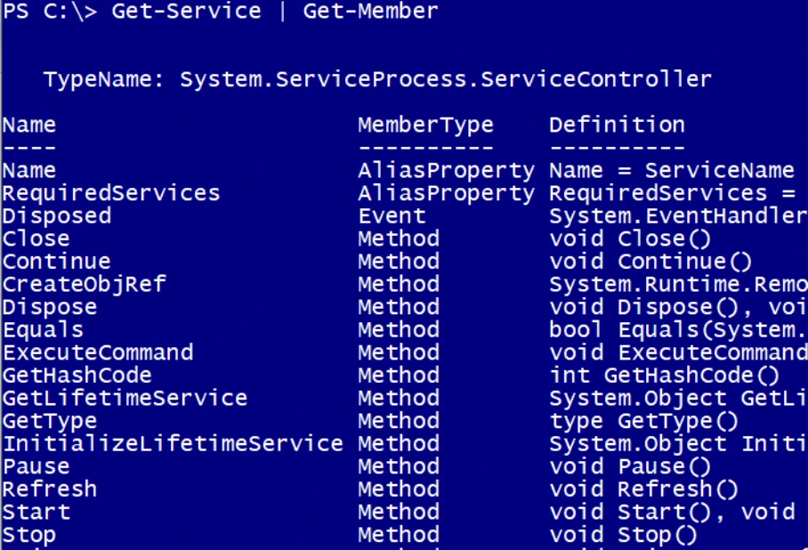
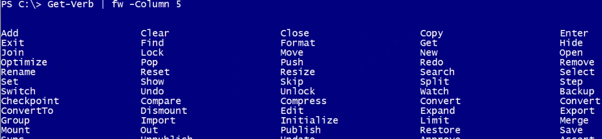
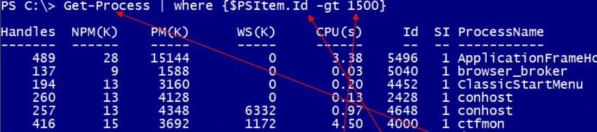
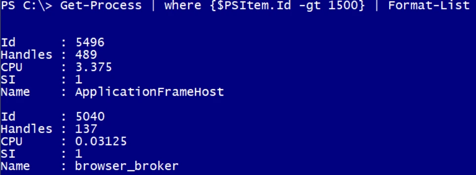

Transcription du support du Drive. Les formulations historiques et les exemples du document sont conservés. Les valeurs d’accès du laboratoire sont indiquées comme « fourni par le formateur ». Les adresses de messagerie personnelles utilisent example.com.
Démonstration 01 du module 3
L’objectif de cette démonstration est de présenter le pipeline.
Lors de la manipulation d’un objet, il arrive que le nombre d’objets soit important, ou que l’on souhaite appliquer un traitement sur l’objet ou une propriété avant de l’afficher.
Pour cela, on utilise le pipe qui permet d’appliquer une commande sur le résultat d’une autre commande.
o Le pipe sert à mettre en forme un résultat de sortie ou générer un tri de valeurs.
o Nous l’avons déjà utilisé avec la commande Get-Member.Dans ce cas, la commande Get-Member est appliquée sur la commande précédant le pipe.
Nous l’avons également utilisé pour mettre en forme les résultats de sortie de commande qui disposent de nombreux résultats.

Il permet d’indiquer à la commande Format-Wide le nombre de colonnes dans lesquelles les
verbes seront classés. Ici la commande Format-Wide est raccourcie en Fw.Le pipe dispose également d’un système d’exploration des propriétés de l’objet $PSItem.
Nous reviendrons sur les variables plus tard, mais nous pouvons voir un cas simple de l’utilisation de cette variable réservée.
Ici la variable $PSItem permet de tester la valeur de la propriété Id de chaque objet Process et
de n’afficher que ceux dans la valeur est supérieure à 1500.Le pipe est utilisable à plusieurs reprises tant que l’objet dispose de suffisamment de propriétés.


